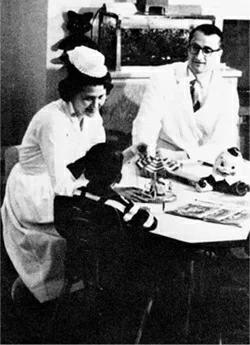

1. A problem of too many possible treatments
Min Chiu Li's work on choriocarcinoma had shown that continued drug treatment could sometimes turn a dramatic response into a lasting cure. For Emil Frei and Emil Freireich, it was encouraging but also unsettling. Their patients with childhood leukemia could die in days, yet the cooperative research group wanted each possible drug combination tested one step at a time.
Freireich worried that the search was becoming impossibly slow. If researchers tested every combination of two drugs, then every combination of three, and then different doses and schedules, the list of experiments would grow rapidly.
Imagine having four drugs, each with several possible doses, several treatment intervals, and multiple orders of administration. Even if each drug were useful, there would be hundreds of possible treatment plans. There were not enough patients—or years—to test every plan separately.
The problem was not a shortage of ideas. It was an overload of possible experiments.
2. A new drug arrives from a flowering plant
In 1960, researchers were studying vincristine, a chemical derived from the Madagascar periwinkle, a small flowering plant. The compound had originally been investigated in a different medical context, but testing revealed that it could damage leukemia cells.
Unlike folate antagonists, which interfere with processes needed for DNA synthesis, vincristine interferes with the machinery required for cell division.
To understand this, imagine a cell preparing to divide. It needs to separate its duplicated chromosomes into two new cells. A structure made of protein fibers, including microtubules, helps organize and move those chromosomes. Vincristine disrupts this system.
The cell may be ready to divide, but the mechanical apparatus needed to complete division cannot function properly. Many rapidly dividing cancer cells are especially vulnerable to this disruption.
3. Why the mechanism of vincristine mattered
The researchers now had drugs acting through different biological processes:
| Drug | Main idea behind its action |
|---|---|
| Methotrexate / amethopterin | Interferes with folate-related DNA production |
| 6-mercaptopurine (6-MP) | Interferes with making and using components of genetic material |
| Vincristine | Disrupts microtubules needed for cell division |
| Prednisone | A corticosteroid that can trigger death in susceptible lymphoid cancer cells |
Because the drugs acted differently, combining them might attack leukemia through multiple vulnerabilities. A malignant cell resistant to one agent might still be susceptible to another.
But there was a problem: all of these medicines could harm healthy tissues. The more drugs doctors used, the more severe and unpredictable the combined side effects might become.

4. Howard Skipper, the “mouse doctor”
An unexpected intellectual ally came from Howard Skipper, a scientist in Alabama. Skipper studied leukemia in mice and thought about its growth using mathematical models.
He worked with a mouse leukemia cell line called L-1210. When he transferred these cells into mice, the cancer cells multiplied rapidly. Their numbers could grow from a tiny starting population to an enormous one in a short time.
This was useful because a mouse model allowed researchers to track what happened when chemotherapy was given at different stages and in different combinations. It was not a perfect copy of human disease, but it was a simplified system in which important principles could be tested.
Skipper's attitude was that a model can be deliberately simplified yet still expose something true about a much more complicated biological problem.
5. First major finding: Drugs often kill a fraction, not a fixed number
Skipper observed that a given chemotherapy treatment often removed a percentage of leukemia cells rather than always eliminating the same number.
Suppose, purely as an illustration, that one round of a drug kills 99% of malignant cells:
| Stage | Cancer cells remaining |
|---|---|
| Before treatment | 1,000,000 |
| After round 1 | 10,000 |
| After round 2 | 100 |
| After round 3 | 1 |
The treatment can appear extraordinarily successful after the first round. A million cells have fallen to ten thousand. Yet ten thousand malignant cells are still enough to start regrowth.
Important qualification: These numbers illustrate the mathematical idea. Human cancers do not necessarily follow this tidy sequence, and real drug responses vary.
The practical lesson is that dramatic early shrinkage does not guarantee elimination. Repeated treatment may be needed to drive the remaining population ever lower.
6. Second major finding: Combinations can reduce escape
Skipper also observed that multiple drugs could have greater effects than a single drug in his mouse model. If different agents killed cells in different ways, the chance that a surviving cancer cell could withstand all the attacks might be lower.
Think of a thief who knows how to bypass one lock. If a door has several independent locks, learning to defeat one lock will not necessarily open the door. Cancer cells can evade drugs through different resistance mechanisms; attacking several processes can reduce the opportunity for escape.
Skipper found that mouse leukemia could sometimes be eliminated using several drugs across repeated treatment cycles. The results encouraged Frei and Freireich to consider a regimen far more aggressive than their colleagues had accepted.
7. Why “more treatment” could seem biologically necessary
The reasoning unfolded in steps:
- Leukemia grows quickly; leaving a small population alive risks rapid regrowth.
- A drug may eliminate a large percentage of cells without removing all of them.
- Different drugs may attack different vulnerabilities and reduce resistance.
- Repeated treatment cycles can strike surviving cells before they repopulate.
- Therefore, a combination used intensively and repeatedly might produce deeper remissions than slow single-drug treatment.
This logic was persuasive in a mouse model, but it was not proof of safety in children. Laboratory leukemia grows under controlled conditions. Human patients have complex immune systems, organ functions, infections, and individual differences.
The difference between a mathematical model and a living child would become one of the most frightening aspects of the next chapter.
8. VAMP: Four medicines, one daring proposal
Frei and Freireich decided to propose a four-drug regimen known as VAMP:
- V — Vincristine
- A — Amethopterin (a name used for methotrexate)
- M — Mercaptopurine (6-MP)
- P — Prednisone
It was not simply four pills given together. Treatment schedules, supportive care, and close monitoring would be essential, because the combination could destroy normal blood production and cause life-threatening complications.
The name itself had different resonances. It could suggest something improvised or patched together, something seductively promising but uncertain. The regimen embodied both meanings: a carefully reasoned scientific idea that might collapse under the very intensity required to make it effective.

9. What the chapter asks us to understand about models
Skipper's mathematical approach was powerful because it explained why a cancer might relapse even after a spectacular response and why repeated combined drugs could make sense.
Yet a model should not be mistaken for reality. A mouse experiment can offer a hypothesis about humans; it cannot substitute for human evidence or erase ethical obligations. Frei and Freireich were about to test the limits of transferring a simplified biological principle into real clinical care.
The chapter also introduces a broader scientific method: when an exhaustive search is impossible, researchers often need an organizing theory to select the most promising experiment. Mathematics did not provide the treatment by itself, but it offered a rational reason to try one extremely ambitious combination.
10. The deeper meaning: Calculating courage
Freireich's impatience was rooted in watching children die while the scientific bureaucracy moved slowly. His critics feared an untested regimen would kill children even faster. Skipper's findings gave the doctors a better argument than desperation alone: there was a measurable biological basis for intense combination therapy.
But they were still taking a dangerous leap from animal data to human treatment. The next chapter shows how much that leap cost.
Chapter takeaway: Skipper's mouse experiments reveal the importance of fractional cell killing, repeated treatment, and multiple drugs acting together. These principles lead Frei and Freireich to propose VAMP, a regimen that might destroy leukemia—or devastate the children receiving it.